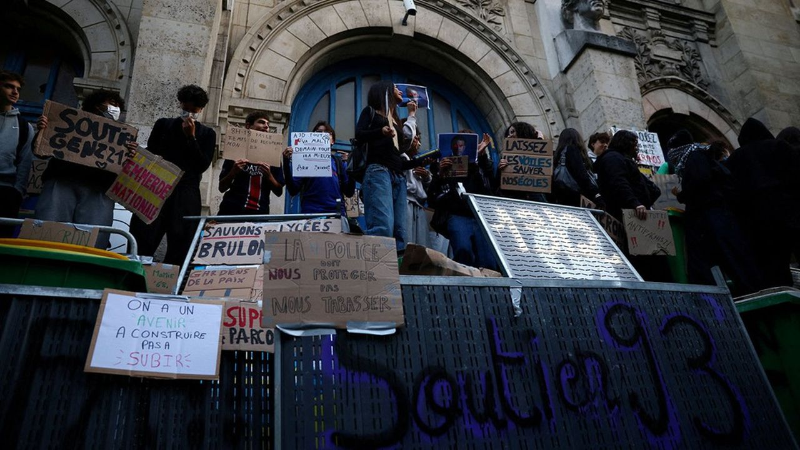

Le 21 septembre, le blocus du lycée Saint-Exupéry de Créteil, né du manque de professeurs et de moyens, gagne les lycées de banlieue, puis le pays : un ras-le-bol face à une violence généralisée. Personnels et élèves dénoncent des conditions de travail et d'étude dégradées, reléguées au second plan par l'angle sécuritaire, qui ne retient que les dérives violentes. On ne parle que de violence. Alors parlons-en : quelle est celle que l'on refuse de voir, celle dont naissent les autres ?
Toute violence est condamnable, surtout contre les lycées ou le personnel, au cœur des revendications. Un mouvement se radicalise face à un usage de la force jugé illégitime ou des individus étrangers à la cause s’y greffent pour d’autres raisons. À l’heure où le cadrage médiatique parle d’une « folie de la foule », rhétorique déconstruite par la sociologie depuis le XXe siècle, les violences policières semblent moins intéresser. En réalité, la violence première est ailleurs : institutionnelle et systémique. Elle est quotidienne, invisible et indicible pour ceux qui ne la subissent pas. Elle se joue dans l’école publique, depuis trop longtemps, sans jamais faire la une.
Schéma de couverture médiatique qui présente une mobilisation comme déviante ou menaçante, en la réduisant à ses actions plutôt qu'à ses revendications. Observé par Todd Gitlin en 1980 dans la presse américaine face au mouvement étudiant, nommé par Chan et Lee en 1984, il repose, selon McLeod et Hertog, sur trois mécanismes :
ACRIMED note que du 28 septembre au 1er octobre, les JT de 13 h et 20 h ont consacré 24 minutes et 53 secondes à la mobilisation lycéenne. 19 minutes et 26 secondes portent sur les violences, les incendies et les affrontements, dont 47 secondes sur la réponse policière ; 2 minutes et 58 secondes sur les accusations du gouvernement contre LFI. L'organisation du mouvement n'obtient que 33 secondes. Au total, 90 % du temps va au spectacle et à l'ordre. Pour 1 minute et 56 secondes de revendications, 19 minutes et 26 secondes de violences.
Gabriel Attal, candidat à la présidentielle de 2027, avertit les lycéens dans une vidéo : on risque de retenir les poubelles brûlées, « pas vos revendications. Pas votre colère. Les flammes. » Sur les plateaux, Nathanaël Combary, qui n'est plus lycéen, travaille selon Contre Attaque pour une agence dirigée par un conseiller du candidat. Attal promet « un prof devant vous » ; son gouvernement annulait pourtant 691,6 millions d'euros de crédits de l'Éducation nationale en février 2024.
Pour Jimmy Gressier, manifester parce qu'on finit à 18 h est incompréhensible. Les longues journées ne sont qu'une revendication parmi d'autres, au cœur des défaillances de l'école. Pourtant, les élèves passent déjà 5 heures par jour en classe dans l'OCDE, contre 7 en France.
Avant d'exiger davantage d'efforts des élèves, encore faudrait-il leur offrir les conditions pour réussir.
« Je ne comprends pas qu'on manifeste parce qu'une journée de 8h à 18h serait devenue insupportable. (…) Le travail n'est pas une injustice. L'effort n'est pas une oppression. »
Story Instagram de J. Gressier, 3 oct. 2026 · OCDE 2019 (collège)
Reprocher aux lycéens de manifester, c'est souvent le réflexe du « nous, à leur âge ». Or, comme le rappelait Bourdieu, faire des jeunes issus de milieux sociaux différents un bloc homogène n'a guère de sens. C'est d'ailleurs la force de ces manifestations : elles réunissent des lycéens de banlieue, de province comme de grands établissements parisiens. Parler de « la jeunesse » comme d'un bloc, c'est aussi exercer un pouvoir sur elle : lui dire qui elle est, ce qu'elle vaut et comment elle devrait se comporter. Le « nous, à leur âge » dit finalement moins sur les jeunes qui se battent pour leur avenir que sur ceux qui s'autorisent à les juger.
Salaire d'entrée d'un professeur certifié, hors primes, en SMIC
Un métier passion qui épuise et n'attire plus : des salaires 18 % sous ceux des autres diplômés du supérieur, des démissions de titulaires multipliées par près de huit (364 en 2008-2009, 2 836 en 2021-2022), des congés maladie en hausse de 41 %, face à une institution maltraitante. Attirer ne suffit pas à retenir.
Harcèlement et cyberharcèlement touchent 37 % des jeunes, en hausse de 11 points en un an dès l'école primaire ; chez les adolescentes, les hospitalisations pour gestes suicidaires ont bondi de 56 % depuis 2020. 71 % des cas naissent dans l'enceinte scolaire, mais le cyberharcèlement, lui, suit l'enfant jusque dans sa chambre. La prise de conscience est réelle ; la solution, non.
Nicolas, 15 ans, harcelé : ses parents alertent le lycée, le rectorat évoque une « dénonciation calomnieuse ». Il se suicide en septembre 2023, à Poissy.
Europe 1, AFP, 2023
34e en maths sur 90 pays : la France perd huit places en trois ans. Elle recule plus que la moyenne.
Un élève de Seine-Saint-Denis perd ainsi une année de cours sur sa scolarité en raison des professeurs non remplacés : une faille structurelle s'ajoutant aux inégalités sociales et culturelles que l'école ne cesse d'aggraver. Le même pays, pas la même école.
Au lycée Maurice-Utrillo de Stains, des personnels alertent depuis 2011 sur des violences sexistes, sexuelles et racistes qu'ils imputent à un membre du personnel. À la rentrée 2026, deux professeures syndiquées sont menacées de mutation « dans l'intérêt du service ». Selon Basta!, l'enquête du rectorat porte sur des « tensions » dans l'équipe, sans audition des élèves ni des parents ; le rectorat affirme avoir traité les signalements selon les procédures. L'article 40 du code de procédure pénale impose pourtant à tout fonctionnaire de signaler un délit. Dans l'institution, alerter a un coût.
Vingt ans après la loi de 2005, la Défenseure des droits dresse un constat de défaillance « toujours valable » : infrastructures inaccessibles, enseignants non formés, AESH absents jusqu'à la cantine. Les 945 témoignages recueillis par l'Unapei en 2025 racontent tous la même attente — une notification sans réponse, un enfant qui reste à la maison. Côté AESH, 9 sur 10 jugent leur rémunération insuffisante, pour un salaire moyen de 1 000 € net. Le budget 2027 ajoute 1 300 postes d'AESH, contre 3 000 prévus en 2024. La loi a vingt ans ; l'école, elle, n'est pas prête.
« Depuis juin je suis en contact avec l'école, on m'a dit de rappeler, de rappeler encore… puis la veille de la rentrée, rien, pas d'AESH pour notre fils. »
Témoignage recueilli par l'Unapei, rentrée 2025
Les organisations lycéennes réclament des professeurs remplacés, plus de personnel, des classes moins nombreuses (30,2 élèves en moyenne en lycée général et technologique) et des bâtiments en état. Le ministre Édouard Geffray juge certaines revendications légitimes. Nouvelle journée d'action le 6 octobre. Des adultes devant les classes, un toit au-dessus.